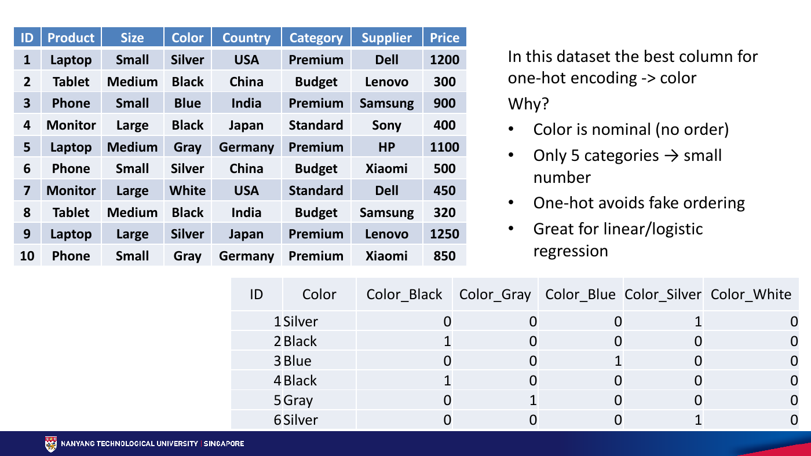
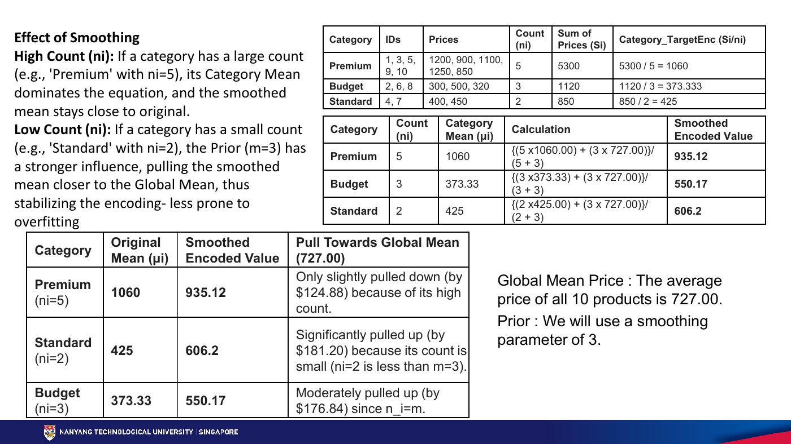
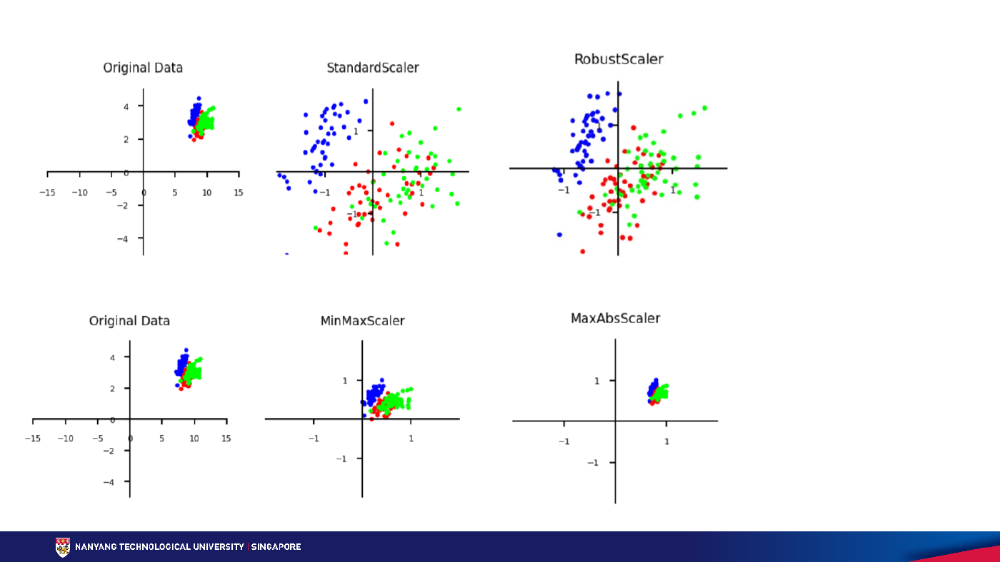
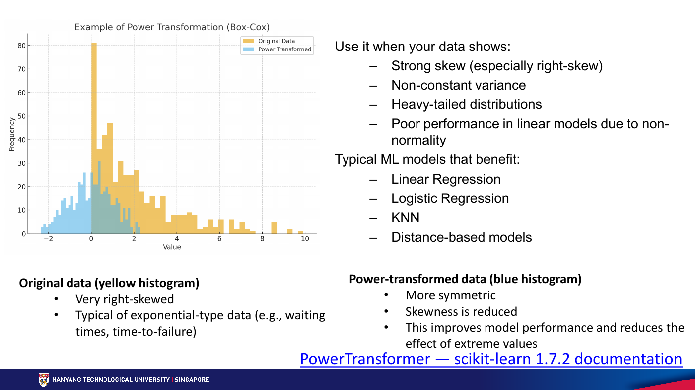
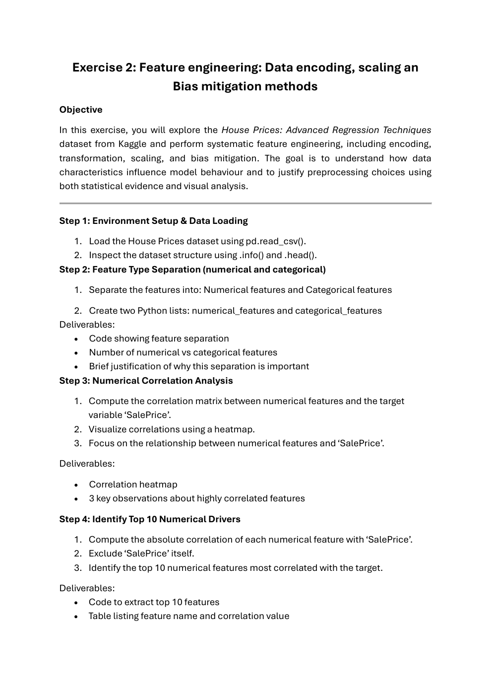
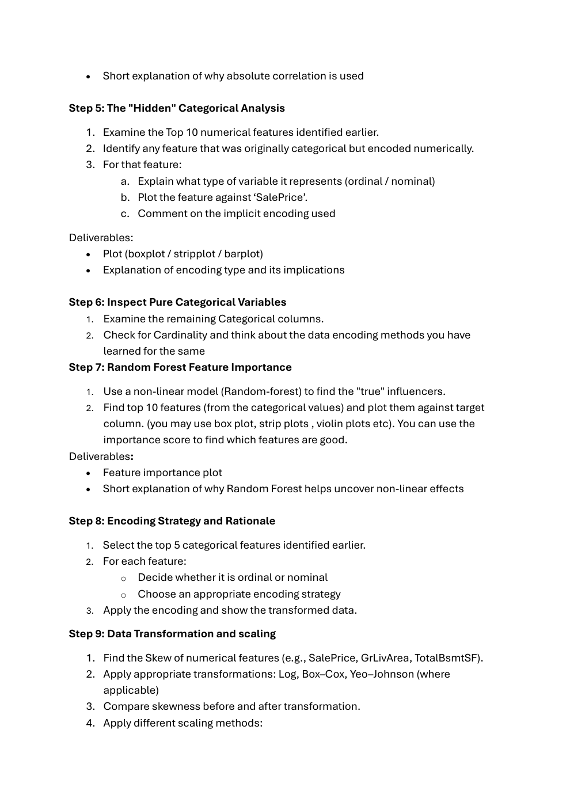
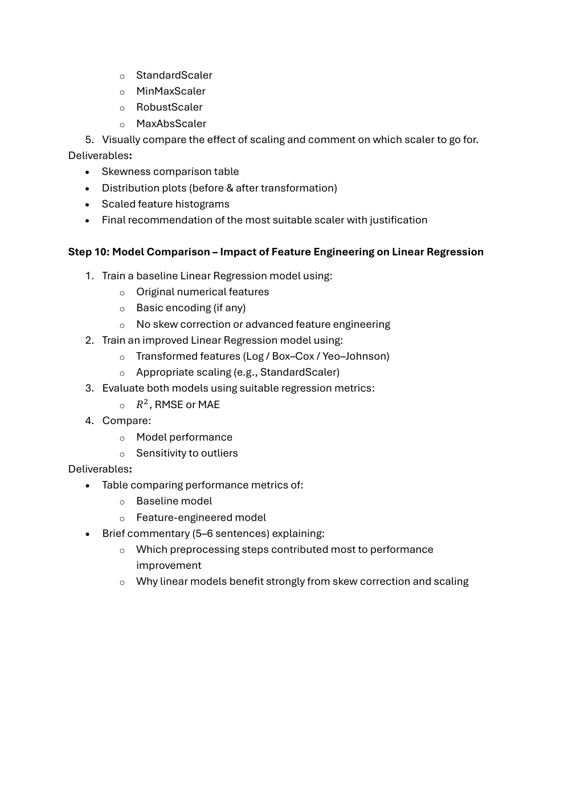

第二周：特征工程、编码、缩放与偏差缓解
把原始数据变成模型能用的输入：类别怎么编码、数值怎么缩放、偏态怎么矫正，最后检查数据里的偏差会不会让模型不公平。
Data encoding｜六种编码怎么选
本章图表 / 方法：六类编码与 10 件商品表（第 2–12、18–20 页）。
一句话：大多数模型只接受数字，所以要把类别变成数字。选方法只看两件事：① 类别有没有顺序（ordinal / nominal）② 类别有多少个（cardinality）。
课件用的商品表（10 行）：
| ID | Product | Size | Color | Country | Category | Supplier | Price |
|---|---|---|---|---|---|---|---|
| 1 | Laptop | Small | Silver | USA | Premium | Dell | 1200 |
| 2 | Tablet | Medium | Black | China | Budget | Lenovo | 300 |
| 3 | Phone | Small | Blue | India | Premium | Samsung | 900 |
| 4 | Monitor | Large | Black | Japan | Standard | Sony | 400 |
| 5 | Laptop | Medium | Gray | Germany | Premium | HP | 1100 |
| 6 | Phone | Small | Silver | China | Budget | Xiaomi | 500 |
| 7 | Monitor | Large | White | USA | Standard | Dell | 450 |
| 8 | Tablet | Medium | Black | India | Budget | Samsung | 320 |
| 9 | Laptop | Large | Silver | Japan | Premium | Lenovo | 1250 |
| 10 | Phone | Small | Gray | Germany | Premium | Xiaomi | 850 |
| 编码 | 适用 | 怎么转 | 优点 | 缺点 |
|---|---|---|---|---|
| Label / Ordinal | 有顺序 | Size：Small = 1，Medium = 2，Large = 3 | 简单、省内存、保留顺序；树模型 / XGBoost 用得很好 | 用在无序变量上，模型会误以为有顺序和线性关系 |
| One-Hot | 无序、类别少 | Color 5 类 → Color_Black、Color_Blue… 5 列 0/1 | 不制造假顺序，最清楚；适合线性模型（Logistic、SVM）和距离模型（KNN） | 类别多时维度爆炸；dummy variable trap（一列能由其他列推出 → 多重共线性） |
| Count / Frequency | 无序、类别多 | Silver 出现 3 次 → count = 3，frequency = 0.3 | 不增加维度；体现常见 / 罕见；新类别可设为 0 | 频数相同的类别无法区分（Silver 和 Black 都是 0.3） |
| Binary | 无序、中高基数 | 先编号 1–6，再写成二进制：Dell = 001，Lenovo = 010… 6 类只要 3 列 | 省内存；不假设线性顺序；每个类别唯一，没有碰撞 | 列没有直观含义；仍引入人工的数值关系；不适合简单线性模型 |
| Target | 无序、高基数 | 每类替换为该类目标的均值 | 利用和目标的关系，树模型（LightGBM、CatBoost、XGBoost）很强 | 过拟合 / 数据泄漏；样本少的类别不稳定 |
| Hash | 无序、极高基数（如 NLP 词表） | index = hash(类别) mod K，固定 K 列 | 维度固定、非常省内存 | hash collision：不同类别可能落到同一列 |


One-Hot vs Frequency（第 10 页）
| One-Hot | Frequency | |
|---|---|---|
| 基数 | 低（课件：< 5 类） | 高（课件：> 10 类） |
| 输出维度 | 每类一列，维度增加 | 只有 1 列 |
| 风险 | 高维、稀疏 | 碰撞（频数相同） |
| 适合的模型 | 线性（LogReg、SVM）、神经网络、距离模型 | 树模型（RF、XGBoost、CatBoost） |
Hash 碰撞例子（第 19 页，K = 3）
假设 hash 值 Dell = 1000、Lenovo = 1001、Samsung = 1002、Sony = 1003、HP = 1004、Xiaomi = 1005，取 mod 3：
- Feature 0：Samsung（1002）和 Xiaomi（1005）
- Feature 1：Dell（1000）和 Sony（1003）
- Feature 2：Lenovo（1001）和 HP（1004）
6 个供应商压到 3 列，每列都有两家碰撞，模型无法区分它们。
课件总结：每列用什么编码（第 20 页）
| 编码 | 最佳列 | 原因 |
|---|---|---|
| Ordinal / Label | Size | Small < Medium < Large |
| One-Hot | Color | 无序、类别少 |
| Effect | Product | 无序、中等基数、方便回归解释 |
| Binary | Supplier | 中等基数 → 减少维度 |
| Hash | Supplier | 展示碰撞；适合更大的词表 |
| Target | Category | 和 Price 强相关，最典型的用法 |
课件勘误：第 12、14、19 页右侧写着“best column for effect encoding”，但这几页讲的分别是 Binary、Target、Hash，按页面主题理解即可。Supplier 实际有 6 家（Dell、Lenovo、Samsung、Sony、HP、Xiaomi），不是 5 家。
from sklearn.preprocessing import OrdinalEncoder, OneHotEncoder
ordinal = OrdinalEncoder(categories=[["Small", "Medium", "Large"]]) # 手动给出顺序
one_hot = OneHotEncoder(handle_unknown="ignore", sparse_output=False) # 新类别全为 0
freq = train["Color"].value_counts(normalize=True) # 频率编码的映射表
import category_encoders as ce
ce.BinaryEncoder(cols=["Supplier"]) # 6 类 → 3 列
ce.HashingEncoder(cols=["Supplier"], n_components=3) # 固定 3 列Target encoding & Regularization｜目标编码与平滑
本章图表 / 方法：Category 目标均值、三种正则化、Bayesian 平滑计算、sigmoid 权重（第 13–17、21 页）。
公式：Enc(i) = Mean(Target | Category = i)。目标是 0/1 时就是该类的正例比例；目标是连续值（如价格）时就是该类的平均值。
| Category | ID | 价格 | n | 总和 | 目标编码 |
|---|---|---|---|---|---|
| Premium | 1, 3, 5, 9, 10 | 1200, 900, 1100, 1250, 850 | 5 | 5300 | 1060 |
| Budget | 2, 6, 8 | 300, 500, 320 | 3 | 1120 | 373.33 |
| Standard | 4, 7 | 400, 450 | 2 | 850 | 425 |
两个问题：① 过拟合 / 泄漏：只出现一两次的类别，编码值就等于它自己的目标值，模型等于偷看了答案。② 对噪声敏感：出现 1 次和出现 1000 次的类别被同样信任。
三种正则化
| 方法 | 做法 |
|---|---|
| Smoothing | 把类别均值和全局均值加权平均，小样本类别被拉向全局均值 |
| K-fold / Out-of-fold（金标准） | 每个样本的编码用其他 K−1 折的均值计算，样本自己的目标永远不参与自己的编码 |
| Adding random noise | 给编码值加一点高斯噪声，打破完美对应，让模型学大趋势 |
平滑公式与计算
Smoothed = (n × 类别均值 + m × 全局均值) / (n + m)
n = 该类别的样本数（证据），m = prior / 平滑参数（伪样本数）全局均值 = 7270 / 10 = 727，取 m = 3：
| Category | n | 原均值 | 计算 | 平滑后 | 被拉多少 |
|---|---|---|---|---|---|
| Premium | 5 | 1060 | (5×1060 + 3×727) / 8 | 935.12 | 下拉 124.88（样本多，拉得少） |
| Budget | 3 | 373.33 | (3×373.33 + 3×727) / 6 | 550.17 | 上拉 176.84（n = m，各占一半） |
| Standard | 2 | 425 | (2×425 + 3×727) / 5 | 606.2 | 上拉 181.2（样本最少，拉得最多） |


第 21 页补充：category_encoders 库用的是 sigmoid 权重：样本数过了某个阈值，几乎完全相信类别均值；样本太少则几乎忽略它。上面的线性公式则是按 m 以固定速度往全局均值拉。
from sklearn.preprocessing import TargetEncoder
encoder = TargetEncoder(target_type="continuous", smooth=3, cv=5)
X_train_enc = encoder.fit_transform(X_train, y_train) # 内部用 K 折交叉拟合，防泄漏
X_test_enc = encoder.transform(X_test) # 测试集用训练集学到的映射易错：训练集要用 fit_transform（带交叉拟合），不能写成 fit(X, y).transform(X)，后者会让每个样本用到自己的目标值。
Data / Feature scaling｜四种 scaler
本章图表 / 方法：缩放目的、四种 scaler 对照表、散点对比图、房产税例子（第 22–25 页）。
一句话：缩放只改变数值的范围和大小，不改变分布形状。目的有两个：让各特征在距离计算中贡献均衡（KNN、SVM），以及让梯度下降收敛更快。
| Scaler | 公式 | 最适合 | 对异常值 | 输出范围 | 保留 0 吗 |
|---|---|---|---|---|---|
| StandardScaler | (x − μ) / σ | 正态分布；默认选择；线性模型、SVM、PCA | 敏感 | 通常 −3 到 3（无硬性上下限） | 否 |
| MinMaxScaler | (x − min) / (max − min) | 非正态、有已知边界（如像素）；神经网络、图像 | 最敏感：一个异常值把其他数据挤到接近 0 | 正好 0 到 1 | 否（除非最小值就是 0） |
| RobustScaler | (x − 中位数) / IQR | 异常值多或严重偏态 | 不敏感 | 不固定，主体居中 | 否 |
| MaxAbsScaler | x / max(|x|) | 稀疏数据（大部分为 0）、文本 / NLP | 敏感：最大值决定尺度 | −1 到 1 | 是 |


房产税例子（第 25 页）：有一套房子税额 $50k，远高于其他房子。这种“脏”数据用 RobustScaler，因为它用中位数和 IQR，异常值拉不动尺度。
from sklearn.preprocessing import StandardScaler, MinMaxScaler, RobustScaler, MaxAbsScaler
scaler = RobustScaler()
X_train_s = scaler.fit_transform(X_train) # 中位数和 IQR 只从训练集学
X_test_s = scaler.transform(X_test)易错：树模型按阈值分裂，通常不需要缩放。缩放也不能把偏态变成正态，那是下一节 power transform 的工作。
Power transformation｜矫正偏态
本章图表 / 方法：为什么要变换、三种偏态、Box-Cox 与 Yeo-Johnson、变换前后直方图（第 26–29 页；power_transform_demo.ipynb）。
一句话：把偏态数据变得尽量接近正态（钟形）。和缩放不同，它会改变分布形状。
为什么需要（第 26 页）：线性回归、逻辑回归、LDA、高斯朴素贝叶斯等参数模型在严重偏态数据上表现差，原因有三：
- 违反假设：这些模型假设误差或特征近似正态。
- 对大值敏感：长尾里的少数大值像异常值一样，把模型拉离大多数数据。
- Heteroscedasticity（异方差）：噪声大小不恒定。幂变换能稳定方差，让大值和小值被同等对待。
| 偏态 | 样子 | 怎么修 | 例子 |
|---|---|---|---|
| 正偏 / 右偏 | 长尾在右，大部分数据在左 | 取对数或开方 | 家庭收入、房价、二手车里程 |
| 负偏 / 左偏 | 长尾在左，大部分数据在右 | 取幂（平方 / 立方） | 退休年龄、考试分数（大多数人及格） |
| 零偏 / 对称 | 钟形 | 不用修 | 身高、标准化产品重量 |
| 变换 | 能处理的值 | 说明 |
|---|---|---|
| Log | x > 0（log1p 可处理 0） | 最常用的右偏修正 |
| Box-Cox | 只能是正数 | 自动拟合 λ；例如 Twitter 粉丝数（对数正态分布） |
| Yeo-Johnson | 正数、零、负数都行 | 数据里有 0 或负值时用它 |


什么时候用：强右偏、方差不恒定、重尾分布、线性模型因非正态表现差。受益的模型：线性回归、逻辑回归、KNN、距离类模型。
from sklearn.preprocessing import PowerTransformer
pt = PowerTransformer(method="yeo-johnson") # 有 0 或负数；全正数可用 "box-cox"
X_train_t = pt.fit_transform(X_train) # 默认 standardize=True，变换后顺便标准化
print(pt.lambdas_) # 每列学到的 λNotebook 例子：House Prices 的 TotalBsmtSF 有很多 0（没有地下室），不能直接用 Box-Cox。可以用 Yeo-Johnson，或者加一列 HasBsmt 标记，只对正值部分做 Box-Cox。
Advanced Feature Engineering｜派生特征、文本特征、降维
本章图表 / 方法：派生特征、TF-IDF、Word2Vec、PCA（第 30 页；Saturday Notebook）。
| 类型 | 例子 | 注意 |
|---|---|---|
| Feature creation（派生特征） | 出生日期 → 年龄；价格和面积 → 每平方英尺价格 | 如果目标是价格，Price/SqFt 就用到了目标，会泄漏 |
| TF-IDF | 衡量一个词在文档里的重要性：本文档常见、整个语料少见 → 权重高 | 输出稀疏矩阵，适合 MaxAbsScaler |
| Word2Vec | 生成稠密向量，捕捉词之间的语义关系 | — |
| PCA | 降低复杂度，同时保留大部分方差 | 第三周 Notebook 详细讲 |
# Saturday Notebook 的 House Prices 派生特征
df["HouseAge"] = df["YrSold"] - df["YearBuilt"]
df["YearsSinceRemodel"] = df["YrSold"] - df["YearRemodAdd"]
df["TotalSF"] = df["TotalBsmtSF"] + df["1stFlrSF"] + df["2ndFlrSF"]
df["TotalBathrooms"] = df["FullBath"] + 0.5 * df["HalfBath"] + df["BsmtFullBath"] + 0.5 * df["BsmtHalfBath"]
df["HasGarage"] = (df["GarageArea"] > 0).astype(int)TotalSF 和它的组成列一起放进线性模型，会产生完全的线性依赖（多重共线性），第四周会讲为什么这会破坏系数解释。
Bias, Fairness & Generalization｜四类偏差和它们的后果
本章图表 / 方法：四类偏差、对公平的影响、对泛化的影响、减少偏差的做法（第 31–34 页）。
| 偏差 | 含义 | 课件例子 |
|---|---|---|
| Historical bias | 数据反映了过去的不平等 | 过去招聘偏向男性 → 模型认为男性更好 |
| Sampling bias | 某些群体代表性不足 | 人脸数据大多是浅肤色 → 深肤色识别差 |
| Label bias | 标签本身不公平或有人为错误 | 贷款违约标签来自有偏的审批系统 |
| Measurement bias | 不同群体的测量方式不同 | 医疗设备对某类人群更准 |
对公平的后果
- 误差率不均：信用评分模型对 A 组误判 20%，对 B 组只误判 5%。
- 自动决策中的歧视：招聘、贷款、保险定价、警务。
- 失去信任、伦理问题；法律合规风险（如 GDPR 要求平等对待受保护群体）。
对泛化的后果
| 问题 | 例子 |
|---|---|
| 对主导群体过拟合 | 主要用成人数据训练的诊断模型，用在儿童身上失效 |
| 学到捷径（poor feature learning） | 靠背景里的雪来区分狼和狗，换张图就错 |
| Domain shift | 只在晴天训练的自动驾驶，雨天或夜间失效 |
| 不现实的假设（algorithmic bias） | 用线性模型拟合非线性关系 |
公平性指标（按群体分开算，再比较）
| 指标 | 公式 | 回答什么 |
|---|---|---|
| FPR | FP / (FP + TN) | 真实为负的人里，被误判为正的比例 |
| FNR | FN / (FN + TP) | 真实为正的人里，被漏掉的比例 |
| Demographic parity | 比较各组 P(预测为正) | 各组获得有利结果的比例是否接近（不看真实标签） |
减少偏差的做法（第 34 页）：提高数据多样性；平衡采样与重加权；公平的标注；公平感知算法；跨群体评估（FPR、FNR、demographic parity）；定期审计；高风险决策加入人工复核。
Bias mitigation techniques｜重加权、过采样、SMOTE 家族
本章图表 / 方法：预处理阶段的偏差缓解：Reweighing、Oversampling、SMOTE、ADASYN、SMOTE-ENN（第 35–37 页；Bias_mitigation_SMOTE_updated.ipynb）。
这些都是 pre-processing 方法：在数据进入模型之前修改训练数据。
| 方法 | 做法 | 优点 | 缺点 |
|---|---|---|---|
| Reweighing | 给代表性不足、且得到不利结果的群体更高权重，给过度代表的样本更低权重 | 与模型无关；简单 | 不改特征，与受保护属性相关的代理特征（proxy bias）仍存在；可能对加权群体过拟合 |
| Oversampling | 复制或合成少数群体 / 不利结果的样本，直到比例平衡 | 实现 statistical / demographic parity | 单纯复制会过拟合 |
| SMOTE | 取两个相近的少数类点，在它们的连线上生成新点 | 比复制泛化更好；模型不再忽略少数类 | 少数类点靠近多数类边界时会制造噪声；合成点不一定真实 |
| ADASYN | 给难学的（被多数类包围的）少数类点生成更多样本，容易的少生成 | 集中在决策边界，边界更准 | 对噪声 / 异常值敏感；可能增加类别重叠 |
| SMOTE-ENN | 两步：先 SMOTE 过采样，再用 ENN（Edited Nearest Neighbours）删除两类中的噪声和重叠点 | 边界更清晰 | 会删掉原始数据（包括多数类）；实现更复杂 |
易错：重采样只能用在训练集上，先划分再重采样；测试集保持原始分布，否则指标不代表真实情况。
Notebook：SMOTE 在违约数据上的效果
5000 个借款人，违约只占 5%；分层划分 3500 训练 / 1500 测试（测试集里 83 个违约）。SMOTE 后训练集变成 3305 : 3305，测试集保持不变。
| 方案 | Accuracy | 违约 precision | 违约 recall | 违约 F1 | 漏掉的违约（FN） | 误报（FP） |
|---|---|---|---|---|---|---|
| Logistic，不处理 | 0.95 | 0.81 | 0.20 | 0.33 | 66 | 4 |
| Logistic + SMOTE | 0.85 | 0.25 | 0.83 | 0.38 | 14 | 212 |
| Logistic + SMOTE，阈值调到 0.70 | 0.92 | 0.38 | 0.71 | 0.50 | — | — |
| Logistic + Borderline-SMOTE | 0.85 | 0.24 | 0.81 | 0.37 | 16 | 212 |
| 决策树（max_depth=5）+ SMOTE | 0.91 | 0.36 | 0.77 | 0.49 | 19 | 113 |
- 不处理：准确率 0.95 很好看，但 83 个违约只抓到 17 个（第四周叫 accuracy paradox）。
- SMOTE 之后：recall 从 0.20 升到 0.83，但误报从 4 个涨到 212 个，所以准确率下降。原因是合成点越过了边界，边界附近的正常客户被判成违约概率更高。
- 调高阈值：0.5 → 0.7 让误报减少，recall 降一些，F1 从 0.38 升到 0.50。阈值要按业务目标选（Notebook 扫描了 0.40–0.90）。
- Borderline-SMOTE 对逻辑回归帮助不大，因为数据本来就不是线性可分的；换成树模型能学非线性边界，F1 更好。
from imblearn.over_sampling import SMOTE
smote = SMOTE(random_state=42)
X_train_sm, y_train_sm = smote.fit_resample(X_train, y_train) # 只对训练集
y_proba = LogisticRegression().fit(X_train_sm, y_train_sm).predict_proba(X_test)[:, 1]
y_pred = (y_proba >= 0.70).astype(int) # 调高阈值减少误报课件结语：特征工程既是艺术也是科学，需要领域知识和实验；更好的特征带来更简单、更强的模型；按算法和数据分布选择缩放和编码方法。
Exercise 2 · House Prices｜十步练习怎么做
本章图表 / 方法：Exercise 2_week2.pdf 三页原题；Week_2_Saturday.ipynb。每行一套房子，目标是 SalePrice。
查看原题第 1–3 页






| 步骤 | 要做什么 | 关键答案 / 易错点 |
|---|---|---|
| 1 Load | pd.read_csv()，看 .info() 和 .head() | — |
| 2 Feature separation | 分成 numerical_features 和 categorical_features 两个列表，报数量，说明为什么要分 | 两类要用不同的预处理（数值：缩放 / 变换；类别：编码）。SalePrice 是目标，Id 只是编号，都不算特征 |
| 3 Correlation | 数值特征与 SalePrice 的相关热图，写 3 条观察 | 相关只描述线性关联，不是因果 |
| 4 Top 10 | 按相关系数绝对值排序，排除 SalePrice 自己 | 为什么用绝对值：强负相关（如 −0.7）和强正相关一样有预测力，符号只表示方向 |
| 5 Hidden categorical | Top 10 里找“本来是类别、却被存成数字”的特征，画箱线图 | OverallQual（1–10 质量评级）是 ordinal，已经被隐式 label 编码。线性模型会假设相邻等级的间距相等，但实际高等级的价格涨得更陡 |
| 6 Pure categorical | 看每个类别列的基数（nunique） | 基数决定编码方法：少 → one-hot，多 → frequency / target |
| 7 Random Forest | 用随机森林找重要特征，画重要性图和 top 10 类别特征的箱线 / 小提琴图 | 随机森林能捕捉非线性、阈值效应和特征交互，Pearson 只看单个特征的线性关系 |
| 8 Encoding | 挑 5 个类别特征，判断 ordinal / nominal，选编码并展示结果 | 有顺序（如质量等级 Ex > Gd > TA）→ ordinal；无顺序且类别少 → one-hot |
| 9 Transform & scale | SalePrice、GrLivArea、TotalBsmtSF 的偏度 → Log / Box-Cox / Yeo-Johnson → 比较前后偏度 → 四种 scaler 对比 → 推荐一个 | TotalBsmtSF 有 0，不能直接 Box-Cox；有异常值时 RobustScaler 更稳 |
| 10 Model comparison | 同一线性回归：原始特征 vs 变换 + 缩放后的特征，比较 R²、RMSE / MAE | 线性模型受益大的原因：偏态长尾像异常值一样拉偏拟合、造成异方差；缩放让系数可比、梯度下降更快。通常对 SalePrice 取 log 的改善最大 |
numerical_features = df.select_dtypes(include="number").columns.drop(["Id", "SalePrice"]).tolist()
categorical_features = df.select_dtypes(exclude="number").columns.tolist()
corr = df[numerical_features].corrwith(df["SalePrice"])
top10 = corr.abs().nlargest(10) # 按绝对值选
print(corr[top10.index]) # 但展示时保留正负号Saturday Notebook 的两个问题：① 在全表上先缩放 / 变换再划分训练测试集，有泄漏；② 原始价格的 R² 和对数价格的 R² 不在同一尺度，不能直接比较。正确做法是在同一次划分上训练两个模型，把预测都还原成原始房价再算指标。
自测
本章图表 / 方法：按考试常见题型整理，先自己答再展开。
1. 教育程度（小学 < 中学 < 大学）用什么编码？城市（50 个）呢？颜色（4 种）呢？
教育程度有顺序 → ordinal；50 个城市无序且类别多 → frequency、binary 或 target；4 种颜色无序且类别少 → one-hot。
2. One-hot 的两个主要缺点？
类别多时维度爆炸（高维、稀疏）；dummy variable trap：一列可由其他列推出，造成多重共线性。
3. 10 行数据中 Gray 出现 2 次，frequency 编码是多少？frequency 编码的缺点？
0.2。频数相同的类别会得到相同的值（碰撞），模型无法区分。
4. 20 个类别用 binary 编码需要几列？
2⁴ = 16 < 20 ≤ 32 = 2⁵，需要 5 列。One-hot 则需要 20 列。
5. 某类别 n = 2、均值 500，全局均值 800，m = 3，平滑后是多少？
(2 × 500 + 3 × 800) / 5 = 3400 / 5 = 680。样本少，被拉向全局均值。
6. 目标编码防泄漏的“金标准”是什么？
K-fold out-of-fold 编码：每个样本的编码只用其他折的数据计算，自己的目标值不参与。
7. 数据有很多极端值，用哪个 scaler？TF-IDF 稀疏矩阵呢？神经网络的像素输入呢？
极端值多 → RobustScaler；稀疏矩阵 → MaxAbsScaler（0 仍是 0）；像素 → MinMaxScaler（固定 0–1）。
8. 特征有 0 和负数，严重右偏，用 Box-Cox 还是 Yeo-Johnson？
Yeo-Johnson。Box-Cox 只能处理正数。
9. 考试分数大多数人很高、少数人很低，是什么偏态？怎么修？
负偏（左偏），长尾在左。用平方 / 立方等幂次修正。
10. 人脸识别数据集大多是浅肤色，属于哪类偏差？贷款违约标签来自有偏的审批系统呢？
前者是 sampling bias；后者是 label bias。
11. SMOTE、ADASYN、SMOTE-ENN 的区别？
SMOTE 在相邻少数类点的连线上插值生成新点；ADASYN 在难学（被多数类包围）的区域生成更多点；SMOTE-ENN 先 SMOTE，再用 ENN 清除两类中的噪声和重叠点。
12. Reweighing 最大的局限是什么？
它不修改特征，与受保护属性相关的代理特征仍然可能带来偏差（proxy bias）；也可能对加权的群体过拟合。